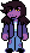
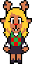
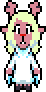

Characters
Kris Dreemurr
Kris Dreemurr is a human and the main protagonist of Deltarune. They are presumably the human Hero of Light in the Prophecy. In a Dark World, they function as the party's leader.
Kris is controlled by the player for the majority of the game. The few exceptions are brief cutscenes or when they tear the SOUL out of their body.
Overworld
Darkworld
Susie
Susie, is a Lightner from Hometown and one of the two deuteragonists of Deltarune. She is the monster Hero of Light of the Legend of Deltarune.
She wields an axe while in a Dark World. With her high HP and Attack, she plays the role of the party's tank and bruiser during encounters. As of late, she’s become the party’s second healer.


Overworld
Darkworld
Ralsei
Ralsei is a Darkner, and one of the two deuteragonists (along with Susie) of Deltarune. He claims to be the "Prince from the Dark", mentioned in the Prophecy.
Having weaker attack and less max health, and with the ability to cast healing spells, Ralsei acts as the party's healer. He wields a scarf in combat.
Darkworld
Noelle
Noelle Holiday is the tritagonist of Deltarune. She is a Lightner from Hometown and one of Kris's classmates, as well as their neighbor and childhood friend.
She plays a very minor role in Chapter 1, but becomes a major character in Chapter 2, where she temporarily joins the party during Cyber City, wielding a ring. If forced to freeze enemies and become stronger, she will become the deuteragonist of the "Weird Route."


Overworld
Darkworld
Toriel
Toriel is a recurring character in Deltarune, and a returning character from Undertale. She is the mother of Kris and Asriel, the latter of whom is off at university. She lives with them in a neatly kept house at the northern end of Hometown.
Overworld